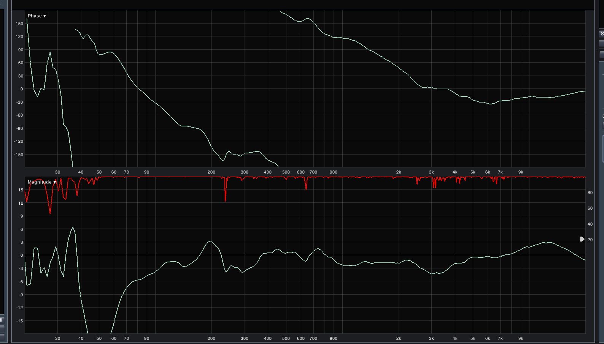
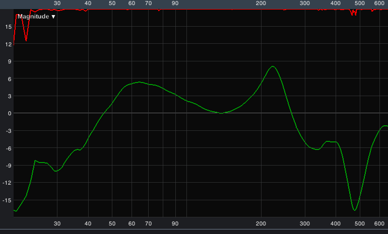
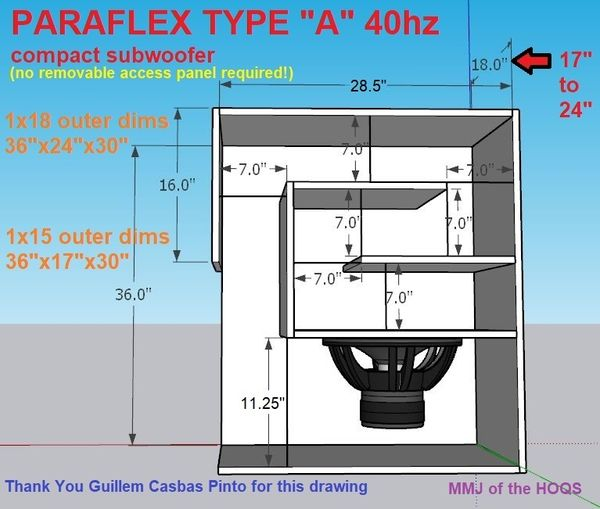
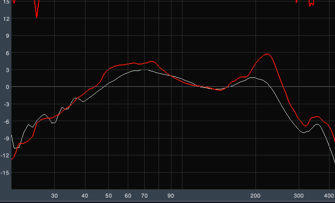

On the bench is the repaired LB1 crossover, now with beefier resistors and a fresh MKT cap. The next question is not how it measures, but how it sounds when turned up.
Part 2
...onwards...
So now, what will we do? Upgrade that filter with audiophile components? Redesign it with what we know now? Or even use some DSP to make an active system? None of the above.
Audio reproduction is a construct, so if we want to know why that box was so successful in those days, we have to tread really carefully.
So what I did was replace those burned resistors with beefier ones of the original value. However, I got rid of that mystery non-working 100 nF to make some room. Purists, forgive me if you hear a change in the 200 kHz region.

I also replaced that electrolytic cap with some MKT I had lying around. We all agree that old electrolytics are a pain, right? They serve as impedance equalisation for the woofer, so they are not in the signal path anyway.
So how does it sound? At first I was a bit underwhelmed, so let's look at the measurement to see if I perhaps made a mistake by swapping the polarity of one of the components. (Note to self: why don't you ever write down how things were connected?)


No, totally correct. As expected: perfect all-pass behaviour. Also, the inverted-tweeter experiment gives a deep null. It does sound that way too, like a well-balanced loudspeaker. Albeit a bit dull and boring — perhaps too much zero-phase FIR filtering for me lately? Puzzled.
So let's turn it up and see what happens... AHA! Euphonics! I can do euphonics; after all, I have been a live sound engineer for many years. So I need a bigger amp, as I was testing with one of my whimsy yet brilliant-sounding gain-clone single-chip amps. Unfortunately I don't have a spare Bryston lying around, but I do have a class A amp from a prior experiment.
Now things start to become clear about why people have blown these speakers into smithereens: they just say more, more, more, more, more. More of what? More of that fantastic low end! That tweeter I do know: not the best 7 kHz I ever heard, but that transmission line is real fun!


Here you go: a measurement very close to the port. You can see the smoothly playing 60 Hz (such a nice frequency). But it does look a bit worrisome around 220 Hz, right? That is a general problem with transmission lines; maybe I can repair that a bit with some more experimental stuffing.
Now, will this loudspeaker work as a generic monitor loudspeaker in 2023? We would first have to define what a monitor speaker is. Contrary to some big names in the loudspeaker-design industry (not studio people), I have the feeling that working as a mixing engineer is also part of the creative phase. Not re-production as in playing back the end result. So a studio monitor is not there as a reference of the end result, but to make you do your creative part in a stimulating way, and to press you to reach further, higher, better, newer.
These monitors came into fashion when we, in live sound, started working with band-pass (6th-order) subs. And hey: let's try some Portishead / Massive Attack and drum 'n' bass (Propellerheads!). ...Woohaaaaa... this is the shit... damn! How revealing is that!
Now, does recent music like Billie Eilish, Whispering Sons or modern classical work? Nah, unless you really enjoy that '90s sauce on everything.


That being said, some of these sound-system blokes experiment a lot with quarter-wave subs, as if it is something new. So who knows what will come into fashion again? After all, everything seems to go in circles.
And another day of listening and experimenting: the red line is the port measurement without additional stuffing, the whitish line is with some extra sheep-wool stuffing. Sure, the low end is cleaner and sounds tighter with the stuffing, but the fun is gone.


More research is required. I will use the extra parts to make a home-brew TL, and in the meantime get a better (DSP) crossover because the group delay of that conventional filter is starting to annoy me. The restored boxes will serve as a reference in my memory database. Keep checking!